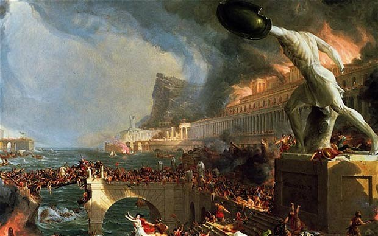

Agriculture is the foundation of manufactures; since the productions of nature are the materials of art. Under the Roman empire, the labour of an industrious and ingenious people was variously, but incessantly employed, in the service of the rich. In their dress, their table, their houses, and their furniture, the favourites of fortune united every refinement of conveniency, of elegance, and of splendour, whatever could soothe their pride or gratify their sensuality. Such refinements, under the odious name of luxury, have been severely arraigned by the moralists of every age; and it might perhaps be more conducive to the virtue, as well as happiness, of mankind, if all possessed the necessities, and none of the superfluities, of life. But in the present imperfect condition of society, luxury, though it may proceed from vice or folly, seems to be the only means that can correct the unequal distribution of property. The diligent mechanic, and the skilful artist, who have obtained no share in the division of the earth, receive a voluntary tax from the possessors of land; and the latter are prompted, by a sense of interest, to improve those estates, with whose produce they may purchase additional pleasures. This operation, the particular effects of which are felt in every society, acted with much more diffusive energy in the Roman world. The provinces would soon have been exhausted of their wealth, if the manufactures and commerce of luxury had not insensibly restored to the industrious subjects the sums which were exacted from them by the arms and authority of Rome.